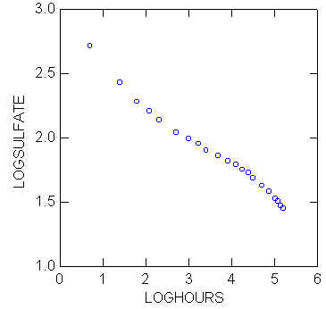

| / Home |
Keywords: nonlinear regression, linearizing transformation
The observed responses are Geiger counter counts (times 10-4) used to measure the amount of radioactively tagged sulfate drug in the blood of a baboon named Brunhilda after an injection of the drug.
| Variable | Description | ||
| Hours | Time in hours since injection | ||
| Sulfate | Geiger counter counts × 10-4 | ||
Data File (tab-delimited text file)
| Jennrich, R. I., and Bright, P. B. (1976). Fitting systems of linear differential equations using computer generated exact derivatives. Technometrics 18, 385-392. |
| Jennrich, R. I. (1995). An Introduction to Computational Statistics. Prentice-Hall, Englewood Cliffs, New Jersey. Section 8.2.1. |

|
Home - About Us -
Contact Us Copyright © Gordon Smyth |